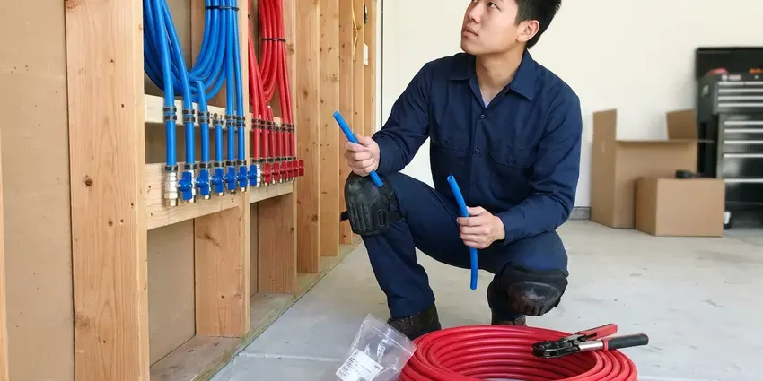

Drains Camera Inspection in Milwaukee, WI
Uncover hidden drain line problems in your Milwaukee, WI home with a precise drains camera inspection by HKV Plumbing.
- Above-Ground Problem Locating
- No-Mess Inspection
- Clear, Plain-English Reports
- Clear Video Reports

Professional Drain Camera Inspections in Milwaukee, WI.
Book an inspection and get video of your drain or sewer line plus a straightforward explanation of what we found.
Professional Drains Camera Inspection in Milwaukee, WI for Clear Diagnosis
When you have persistent drain problems in Milwaukee, WI, HKV Plumbing offers advanced drains camera inspection to find the root cause. This non-invasive method saves you time and money by avoiding unnecessary digging and making sure we address the actual issue.
Our expertise includes:
- Pinpoint hidden clogs, cracks, or pipe damage.
- HD self-leveling camera inspection of 1.5 to 8 inch lines
- Find lost items in your drain lines.

Additional Plumbing Maintenance Services in Milwaukee, WI
Our maintenance and specialty plumbing services in Milwaukee, WI protect your home year-round and extend the life of every system.


Customers
Why Choose HKV Plumbing for Drains Camera Inspection in Milwaukee, WI?
Our team uses the latest camera technology so no issue goes unnoticed, delivering peace of mind for your Milwaukee, WI property.
- HD Footage, Our cameras record sharp, well-lit video that clearly shows pipe condition.
- Unbiased Findings, We report what the camera shows, whether or not a repair is necessary.
- Cost-Effective, By pinpointing the exact problem, we can provide targeted repairs, saving you money on unnecessary work.
Citywide Coverage
No matter where you are in Milwaukee, WI, our plumbers are equipped to bring our specialized drain camera inspection services directly to you. We understand the plumbing challenges across the entire metro area.
Experienced Team
Our camera technicians have reviewed thousands of feet of pipe footage. They can tell a minor scale deposit from a serious crack and know which findings need prompt attention.
Safety-First Approach
All drains camera inspections by HKV Plumbing are conducted with strict attention to safety protocols and local plumbing codes in Milwaukee, WI. We put first the safety of your property and our technicians.
Trusted Certified Milwaukee Plumbing Services Professionals
At HKV Plumbing, we take pride in providing licensed, certified plumbing services throughout Milwaukee, WI. Backed by recognized industry credentials, our experienced plumbers combine technical skill with genuine customer care. Whether it is repair, installation, or maintenance, we follow strict safety and quality standards to deliver long-lasting results you can trust.
Call Us Now PHCC Plumbing Contractor Recognition
PHCC Plumbing Contractor Recognition Better Business Bureau (BBB) Accreditation
Better Business Bureau (BBB) Accreditation Angi Certified Pro
Angi Certified Pro ISO 9001 Quality Management Certification
ISO 9001 Quality Management CertificationThorough Drains Camera Inspection Services in Milwaukee, WI
Kitchen and Branch Drain Camera Inspection in Milwaukee
Smaller cameras fit through kitchen, bathroom and laundry lines inside the house. They help explain recurring clogs and slow drains caused by grease buildup, scale or a broken fitting under the slab. We can see where branch lines tie into the main and whether they slope correctly. This is especially useful before a kitchen or bathroom renovation.

Sewer Line Camera Inspection in Milwaukee, WI
Sewer line problems can be extensive and costly. Our sewer line camera inspection service in Milwaukee, WI uses longer, more robust cameras to examine the main line connecting your home to the municipal sewer system. We look for root intrusion, cracks, misaligned joints due to ground shift, or complete pipe collapses. Identifying these issues accurately allows us to recommend targeted repairs, such as trenchless pipe repair, rather than disruptive excavation.
Root Intrusion Detection in Milwaukee, WI
Tree root intrusion is a very common problem for plumbing systems in Milwaukee, WI, especially with older, more established trees and traditional pipe materials. Our camera inspection can clearly show where roots have penetrated your pipes, causing blockages and structural damage. Once identified, we can discuss effective strategies to remove the roots and prevent future intrusion, protecting your drain lines.
Pre-Purchase Plumbing Inspection in Milwaukee
Before buying a home in Milwaukee, especially one built on a slab foundation, a drains camera inspection can save you from surprise plumbing nightmares. We can identify potential issues like corroded pipes, prior repairs, or developing leaks that may not be apparent during a standard home inspection. This proactive step provides peace of mind and can be a valuable negotiation tool.
Pre-Purchase Sewer Scope in Milwaukee, WI
Standard home inspections usually do not include the sewer line, yet sewer repairs can cost thousands. A pre-purchase sewer scope shows the condition of the lateral before you close. Older homes with clay or Orangeburg pipe benefit the most. Our findings can support repair requests or price negotiations with the seller.
Main Sewer Line Camera Inspection in Milwaukee
A main sewer camera inspection follows the line from your cleanout to the city tap or septic tank. We look for root intrusion, cracked joints, offset pipe, bellies and failing connections. The camera's sonde transmits a signal so we can mark the exact spot on your lawn or driveway. You receive a recording and notes that any contractor can use.
Post-Repair and Post-Jetting Verification in Milwaukee
After a root cutting, hydro jetting or pipe repair, a follow-up camera pass confirms the work was done right. You see that the roots are gone, the grease is cleared or the new section is properly aligned. This step gives peace of mind and documents the condition for future reference. It is also helpful when a warranty or landlord agreement requires proof.

Identifying Tree Root Intrusion in Milwaukee, WI
Tree roots are a common cause of drain issues in Milwaukee, WI, especially with older homes surrounded by mature trees. Our camera inspections clearly show where roots have penetrated pipes, causing blockages and structural damage. We use high-definition cameras to distinguish between minor root hair intrusion and severe root balls that need hydro-jetting or even pipe replacement.
Drains Camera Inspection Near Me in Milwaukee, WI
We understand the urgency when drain problems arise, which is why we work to provide prompt and efficient service throughout the Milwaukee area. Our goal is to offer convenient, professional drain camera inspections right in your neighborhood, providing clarity on your plumbing issues.
Our camera technicians are based locally and can usually schedule inspections within a day or two. For active backups, we can often camera the line the same day after clearing it. You do not have to wait weeks for answers.
HKV Plumbing at a Glance
- Fully licensed plumbing team covering Milwaukee, WI
- 24/7 emergency service with same-day scheduling
- Clear written estimates, no hidden fees
- 4.8-star rated by 448+ Wisconsin customers
Milwaukee Map
Milwaukee Information
- Population
- 561,385
- Area codes
- 414/262/920
- Service area
- Milwaukee and communities within 40 miles
- Nearby
- Wauwatosa, West Allis, Waukesha, Racine
Freeze and thaw cycles shift the ground each year, which can crack older clay and cast iron sewer laterals. Regular drains camera inspections help homes in Milwaukee catch pipe damage early and prevent costly slab leaks.
Expert Services
Trust our professionals for reliable HKV Plumbing solutions in Milwaukee, WI.
Our Specialized Plumbing Services in Milwaukee, WI
At HKV Plumbing, we provide a complete range of plumbing services across Milwaukee, WI. From leak detection to full system installations, our team ensures fast, precise, and affordable service for both residential and commercial properties. Explore our core services below:


Here Is How Our Drains Camera Inspection Process Works in Milwaukee, WI
Our drains camera inspection process is designed for efficiency and accuracy, providing you with a clear understanding of your plumbing system's condition.
Request a Quote
Call (414) 432-4641 and tell us whether you need a sewer scope, a drain diagnosis or a pre-purchase inspection. We confirm the price and book a visit.
Run the Camera
We insert the camera through a cleanout or fixture and record the full run of pipe. Any defect is located and marked on the surface.
Review the Footage
We walk you through the video and explain each finding in plain language. You receive the recording and recommendations for any needed repairs.
Frequently Asked Questions About Drains Camera Inspection in Milwaukee
A standard drain or sewer camera inspection typically costs $150 to $400. Adding locating and depth marking usually brings the total to $250 to $500. If we clear the line first, cleaning is billed separately.
Most inspections take 45 minutes to 90 minutes. Lines without a cleanout or with heavy buildup can take longer. We give you an estimate before starting.
No. The camera is pushed gently through the pipe on a flexible cable. It enters through existing cleanouts or fixtures, so no cutting or digging is required.
We use professional-grade, high-resolution waterproof sewer cameras from reputable brands like Wohler, MyTana, and Ridgid. These cameras are equipped with powerful LED lights for clear visibility and often include self-leveling heads to maintain an upright image, for accurate diagnostics.
Common signs include recurring clogs in multiple fixtures, slow drains that don't respond to plungers, foul sewage odors, gurgling sounds from drains, or sudden increases in your water bill. If you're experiencing any of these, especially in older Milwaukee homes, an inspection is highly recommended.
While small, consumer-grade drain cameras are available, they lack the quality, reach, and diagnostic capabilities of professional equipment. A DIY approach may miss critical details or misinterpret findings. Professional plumbers have the experience to accurately interpret the footage and recommend appropriate solutions, which is vital for the varied soil and foundation conditions in Milwaukee.
Typically, a preventative drain camera inspection is not covered by standard homeowner's insurance. However, if the inspection is performed as part of diagnosing damage already covered by your policy, such as a burst pipe, parts of the cost might be. It's best to check with your own insurance provider.
Yes. Tree root intrusion and aging sewer lines cause trouble in many neighborhoods. Freeze and thaw cycles shift the ground each year, which can crack older clay and cast iron sewer laterals. A camera inspection is crucial for accurately diagnosing these local challenges.
What People Are Saying About Our Plumbing Experts?

Emily R.
I called HKV Plumbing for plumbing repair, and the technician was fast, polite, and thorough. They explained the problem clearly and fixed it the same day. I will definitely hire them again. Highly recommended!
Plumbing Repair · Milwaukee, WI
Robert G.
The trenchless sewer replacement saved our front yard. They walked us through the camera inspection footage first so we knew exactly what we were paying for.
Sewer Line Replacement · Kenosha, WI
Patricia H.
We had a slab leak that two other companies could not find. HKV Plumbing located it in under an hour, explained our options, and the price matched the quote to the dollar.
Slab Leak Repair · Kenosha, WI
Mark T.
When our office needed drain cleaning, HKV Plumbing provided quick, reliable service. The plumber arrived on time and made sure every drain flowed perfectly before leaving. Very satisfied.
Drain Cleaning · Sheboygan, WI
Daniel K.
A pipe burst at 11 pm and they actually answered. The plumber showed up within the hour, shut everything down, and had us back to normal the next morning. Could not ask for more.
Emergency Plumbing · Wauwatosa, WI
Laura S.
I scheduled a water heater replacement, and the team made the process smooth and affordable. The new unit works perfectly, and they cleaned up after completing the job.
Water Heater Replacement · Wauwatosa, WI